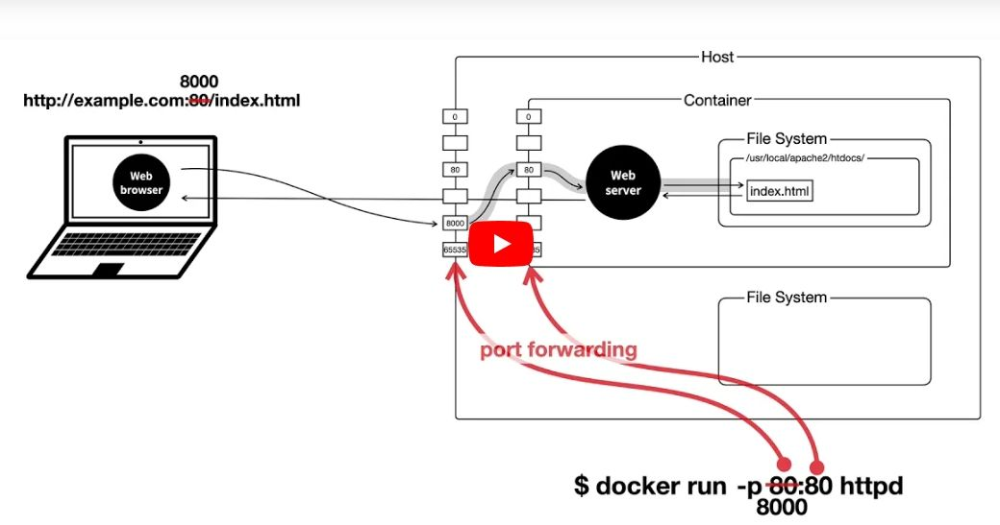
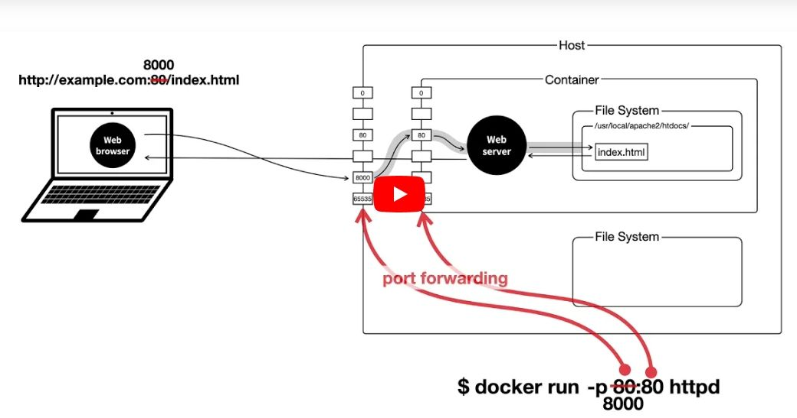

Docker

1. Docker 네트워크 -p 8000:80
도커 host 와 container 를 네트워크적으로 연결하는 방법 
# 도커 네트워크 - host 와 container 연결 $ docker run --name ws2 -p 8000:80 httpd
# 접속확인 - 웹브라우저의 주소창에 입력 192.168.0.2:8000
도커 host 와 container 를 네트워크적으로 연결하는 방법 
# 도커 네트워크 - host 와 container 연결 $ docker run --name ws2 -p 8000:80 httpd
# 접속확인 - 웹브라우저의 주소창에 입력 192.168.0.2:8000